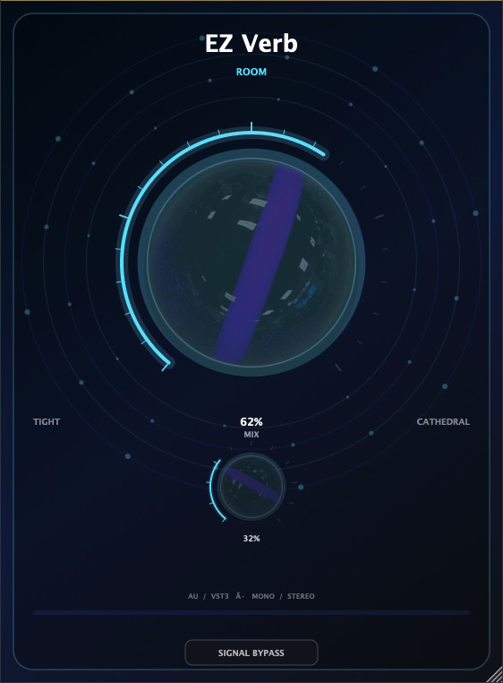
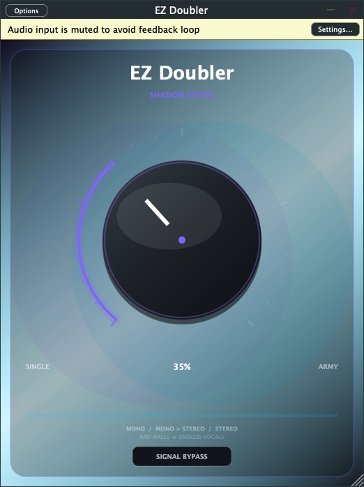
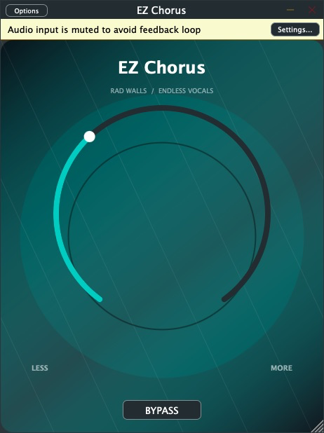
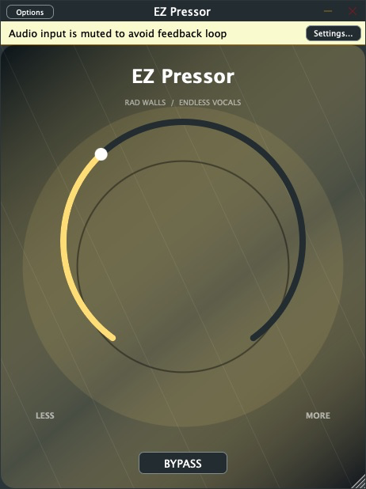
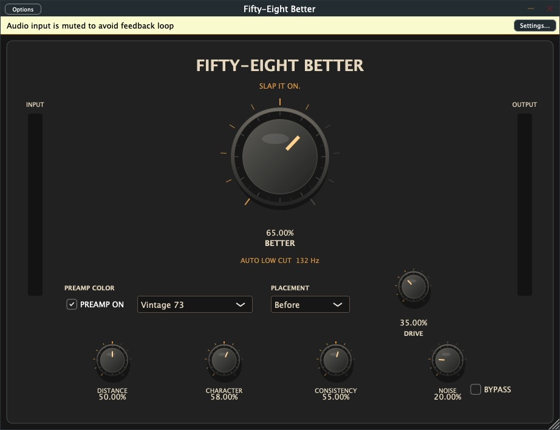

Simple tools for practice and recording
One knob. Better sound.
The EZ Suite gives vocalists and musicians the sound of a focused plug-in chain without the setup spiral. Each effect now has its own visual world and upgraded sound engine. Turn one control until it feels right, then get back to singing, writing, and recording.
All nine — $39 · or $9 each · macOS AU + VST3

RDWS × Endless Vocals
RDWS RAW SYNTH V2
$15 · AU + VST3 + Standalone
A 12-voice stereo instrument with two oscillators, resonant filtering, dual envelopes, analog drift, chorus, crossfeed delay, reverb, six presets, and 33 photographed controls that rotate around their original measured pivot points. Built for Apple Silicon Macs running macOS 13 or newer.
Get RDWS RAW SYNTH V2 · $15






Fifty Eight Audio × Endless Vocals
Fifty-Eight Better
$19 · AU + VST3
A focused vocal finisher for SM58-style microphones with adaptive low-cut, tone shaping, leveling, noise reduction, peak control, and three preamp colors.
Get Fifty-Eight Better